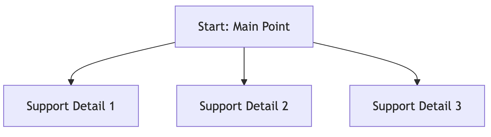

An Engineer’s Playbook for Formal Communication in the AI Age
Senthil Kumar
2025-09-17

Why am I even speaking on this topic?
- Once upon a time, 15 years ago ….
- I started my role as a Market Research Analyst in a Procurement-focused Management Consultancy Firm.
- Typically, a Management consultancy has a team of Consultants and an army of Market Research (MR) Analysts.
- My first company combined the role of both Consultant and MR Analysts into one.
- As a Consultant and a MR Analyst, I had a ton of opportunities to hone my communications skills

Why am I even speaking on this topic?
- 💼 My Career: If I were an Asset Management Company, I’d have primarily invested in momentum funds.
- 🔄 Career Transitions from one momentum to another: Management Consulting → Analytics → Data Science → Deep Learning → Generative AI
- 🥖🧈 Early Roles: My bread and butter in the first two roles - Management Consultancy and Analytics - depended heavily on communication skills!
- I made cold-calls, sent lots of cold emails, prepared tonnes of reports and gave an equally substantial report explanation calls to clients in senior levels
The Four Pillars
- Active Listening 👂
- Mindful Reading 📖
- Deliberate Writing ✍️
- Clear Speaking 🗣️
- Your mind voice: “Just fancy, empty adjectives 🫙â€
- But really, it’s about making everything active and intentional
- Practical tips and hacks coming up in the next slides 🚀
What does it take to become a better communicator?
- All four forms of communication are deeply interconnected 🔗
- Better listeners become better speakers 👂➡️🗣️
- Better readers become better writers 📖➡️✍️
- Strong writers often become strong speakers — and vice versa 🔄
1. Active Listening
Typical Instructions for Active Listening
- 🧘 Be present
- 🤔 Stay curious
- 👠Acknowledge (nodding, verbal cues)
- 🔠Reflect in your own words
- Thanks, but no thanks 🙅
- These tips are hard to practice—especially for boring topics 😅
Listening - With Imaginative Subtitles

Activate Imaginative Subtitles
My go-to active listening hack for boring topics:
🬠Run a mental subtitle track
- Words scroll across your mind’s screen on a black background
- In a cursive, homebrew-style font
- Sprinkled with emojis 🥤✨
📠Make nouns stand out in bold and spice up adjectives with italics
Listening - With Spectrogram
Listening — With Spectrogram 🎶
- In your imaginative Netflix mind, let the bottom strip run a
Spectrogram📊 - Actively notice every inflection in speech instead of just absorbing it subconsciously 🎧
- Is the delivery fiery like Virat Kohli 🔥 or calm like Dhoni 🧑🏼‍✈️🆒?
- Use it to gauge the passion in the speech — flat, wavy, smooth, evocative, or full of highs and lows 🌊
Listening — With Toastmasters-like Metrics 🎤
Side effects of running mental subtitles:
- ✅ Spot grammatical slips
- 🔢 Track filler words — the classic “Ah Counter†(my favorite!)
- 🔠Notice stammering or repeated sentence starts
Listening as Toastmasters — Grammar ✍️
- Common slip-ups: “I can able to…”, “She did not completed this …†âŒ
- Unless you’re Sachin 🏏 or ARR 🎶, speaking correctly matters in the long run ✅
Listening as Toastmasters — Ah Counter 🔢
- My favorite metric: the Ah Counter! 🎯
- Filler words like “like”, “you know”, “but umm…†🙃
Listening as Toastmasters — Crutch Phrases 🪃
- Common fillers: “Actually”, “At the end of the day…”, “Honestly speaking…†🗨ï¸
- Are some of these phrases being overused? 🤔
Listening as Toastmasters — Stammering ⏸️
- Examples: “I-I-I think we should…†or “So, so, so the plan is…†🗣ï¸
- Often caused by rushing thoughts or ideas racing ahead of words ğŸƒğŸ’
Why Toastmasters-like Active Listening? 🎧✨
- It’s not about finding faults 🤦‍♂️💥
- These hacks help you become less self-critical ❤️‍🔥
- Nobody’s perfect—and that’s perfectly okay 👌🏼
- But acknowledgment is the first step to improvement ✔️
- Often, the simplest solution is just pausing more ⏸️
Experienced Listener — Inferring Styles from a Speech 🎯
- Deductive ⬇️ — Top-down reasoning
- Inductive ⬆️ — Bottom-up reasoning
- Git Workflow 🔀 — Branching paths and merges …
Speech Style - Deductive: Top-down Approach

- “We need to refactor the payment module [main point].
The current code has duplicated logic, poor error handling, and makes onboarding new developers difficult [details].”
- 👉 Here, the decision/action comes first, followed by supporting evidence
Speech Style - Inductive: Bottom-up Approach

- “The payment module has duplicated logic, poor error handling, and is hard for new developers to understand [details].
That’s why we need to refactor it [main point].”
- 👉 Here, the evidence builds up, and the conclusion is delivered last.
Another Good Style: Trunk and Feature Branches

Hybrid Speech Styles
Real-life: Most talks are like a hybrid of deductive-inductive.
2. Second Pillar: Mindful Reading
Importance of Writing for Better Reading Comprehension ✍️📖
- The world is flooded with content — whether from humans or AI 🌍💨
- The real question: Are we truly efficient at reading comprehension? 🤔
Mindful Reading — Breaking Down Long Reads 📚✨
- Problem:
- Long messages, reports, research papers, or documents can feel overwhelming 🤯
- Passive scanning/reading gets you nowhere ❌
- Accountable Reading Hacks:
- 📠Headings Only — jot down one-word summaries
- 😀👎❓ Emote It — copy each para/bullet and react to it
- ✍️ Selective Self-Writing — add your own comment/summary to key sections
Mindful Reading — Visual Structures 🧩
- Use Flowcharts or Tables to simplify complex text
- Tools: Pen & Paper ✍️, Mermaid Charts 🪄, Excalidraw 🎨, Draw.io 🖥️, etc.

3. Third Pillar: Writing
My Motto on Writing ✍️✨
- Time spent writing is never wasted ⏳
- Writing is how I learn 📖
- Writing is how I think 💡
Avoid Agenda-less Meeting Invites or Hi!
- Avoid sending a meeting invite which does not have an agenda
- Never, ever send Empty “Hi/Hello†and waiting for others to respond. Always add an one-line context
The Importance of Writing Before Calling ✍️ → ☎️
- Yes, call and explain things 👥 — but prepare a pre-meeting write-up (if not for others, for yourself ).
- A short write-up before the meeting helps everyone align better ✅
Document-Driven Meetings — Any Takers? 📄🚀
- At Amazon, problem-solving meetings start with a structured written memo instead of a slide deck 📝
- The two-page memo received over 50 comments 📑📠before the call
The engineer felt disheartened initially 😓 but soon realized the writing and thinking required significant improvement 💡
Fourth Pillar: Speaking
Achieving Exceptional Speaking Skills 🎤✨
- Mastering listening, reading, and writing is key to exceptional speaking 👂📖✍️
- No matter where you are now—never underestimate your long-term potential 🚀
Meeting Room Conversations vs Public Speeches 🏢🎤
- Chasing public speaking perfection is a wrong goal (for most of us) ❌
- Nobody wants a Sashi Tharoor-style monologue in every day meeting discussions 😅
- Instead, let us focus on making everyday meeting room conversations effective!
How to Improve Meeting Room Conversations
- Improve your speech following the Toastmasters metrics
- Use the Speech Styles to make your thoughts coherent
- Practice thinking on your feet, which transfers to public speaking naturally 💡
Status Update Calls
- This is one of the most frequent calls as Software Engineers
- Let us look at the steps to master these calls
Status Update Call Template
- Starting the Update 🎬
- Acknowledging 👍
- Transitioning 🔄
- Answering Questions ❓
- Closing & Next Steps 🏁✨
Status Update Call Hacks
- Starting the Update 🎬
- “To kick things off…†ğŸ
- “At a high level, here’s where we stand…†📊
- Acknowledging 👍
- “Makes sense†✅, “Fair point†💡, “That adds up”, “You are right”
Status Update Call Hacks
- Transitioning 🔄
- “If we zoom out to see the big picture…†🌠| “If we drill deeper ğŸ”â€
- “That brings us to the next point…†â¡ï¸
Status Update Call Hacks
- Answering Questions ❓
- “If I read your question correctly, you are asking…†👀
- “It’s a valid concern. I don’t have a concrete answer right now, but I’ll research and circle back.†ğŸ”
- Closing & Next Steps 🏁✨
- “Here’s what we’ll tackle next…†📌
- “I’ll follow up with an email …†✉ï¸
How to handle difficult conversations
Some Funny quotes
When Someone Puts A Gun to Your Head 🔫
Why Sheldon does not use cuss words

Like a Tree Standing in a Torrential Downpour
Handling Difficult Conversations — Scenarios ⚡️
- Scenario 1: Person A interrupts you midway — how do you respond? 🤔
- Scenario 2: Person A pressures you with an unwise timeline — what’s your move? ⏳
- Scenario 3: Person A puts you down publicly — how would you tackle it? 💬
1. Person A interrupts you midway — how do you respond? 🤔
- Calm Assertive Pushback
- Calm Assertive Pushback
- Hold that thought—let me finish this and then we’ll come to it.
- Defusing the heat
- Defusing the heat
- I hear you, I was coming around to that point anyway
2. Person A pressures you with an unwise timeline — what’s your move? ⏳
- Buying Time Without Sounding Defensive
- I’d prefer to give you a realistic answer, not a rushed one — let me circle back by tomo.
- Acknowledging Pressure, But Reframing
- I understand the urgency, At the same time, I want to make sure we don’t cut corners.
3. Person A puts you down publicly — how would you tackle it? 💬
- Acknowledge but Reframe
- I hear your concern. I think it’s best we look at the
and resolve the issue
- Take the High Ground but still Reframe
- Thanks for the feedback. But I am avoiding explaining my past efforts to keep this discussion constructive. I’d rather want to look at future steps of resolution
Conclusion
What does a good communicator need?
- “Active†Everything - Listening, Reading, Writing and eventually it will show up in your speaking
- Have a holistic goal on communication